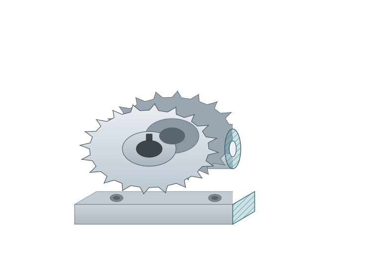
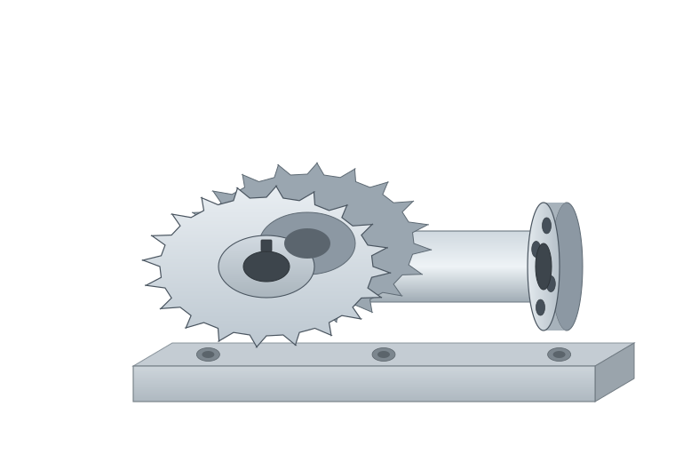

3D CAD 뷰어 — 측정 도구 UX
STEP / IGES / STL · Windows 데스크톱 · Qt 도킹 패널
C
액추에이터_어셈블리.STEP — CADVue


거리84.00 mm
ΔX76.20
ΔY31.75
ΔZ12.70
YZ · 옵셋 12.50 mm
등각 보기 · 음영 표시(모서리)
선택 항목
면<1>
면<2>
두 평행면
각도0.00°
전체 거리84.00 mm
면적 (면<1>)38.48 cm²
투영 기준없음
측정 이력
모두 지우기
절단면
옵셋
캡 (Capping)
단면 채우기
준비됨
단위: mm
정밀도: 0.01
커서 X 124.50 Y 88.20 Z 0.00
거리 84.00 mm
YZ 단면 · 옵셋 {{ secOffset }} mm
등각 보기
100%
상단 기본 · 측정 · 단면 탭으로 상태 전환 · 우상단에서 라이트 / 다크 테마 전환. 측정 패널·단면 패널은 우측 도킹 패널로 표시됩니다.